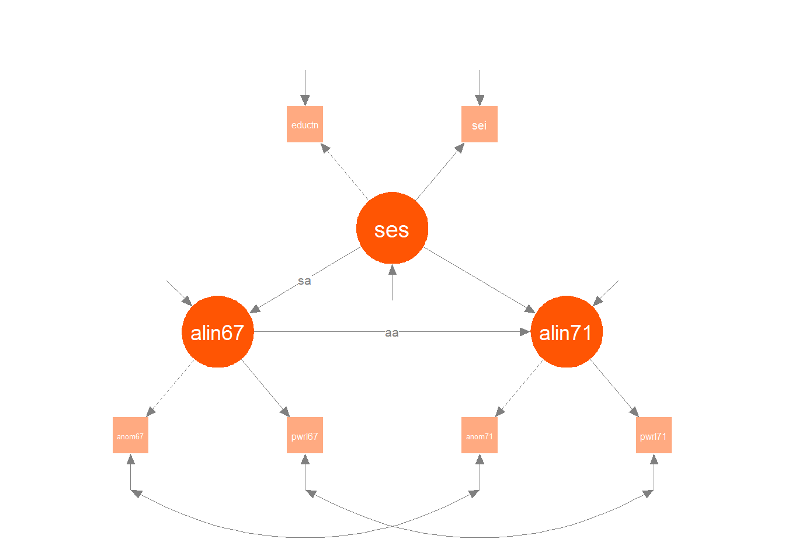
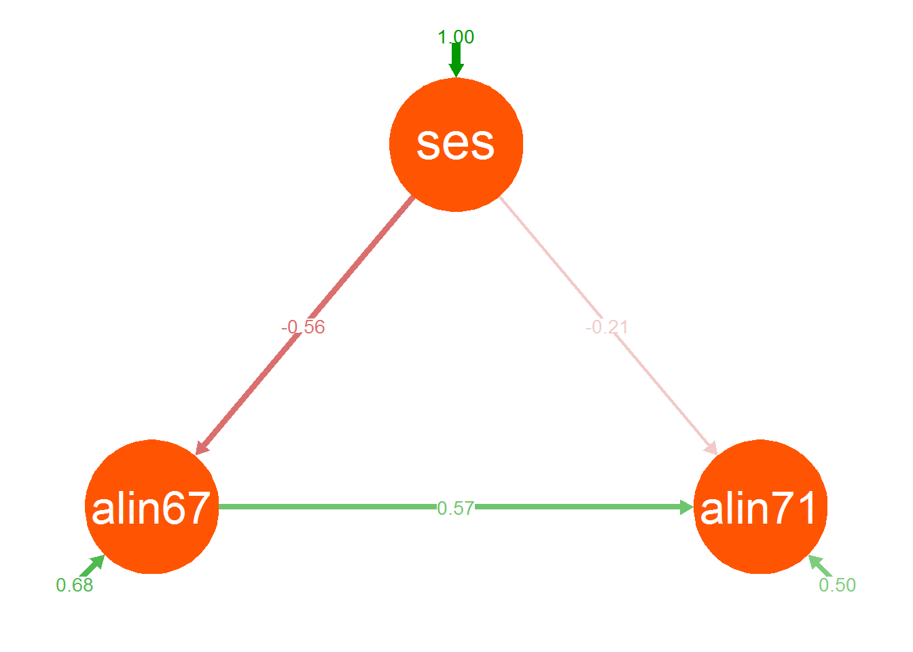
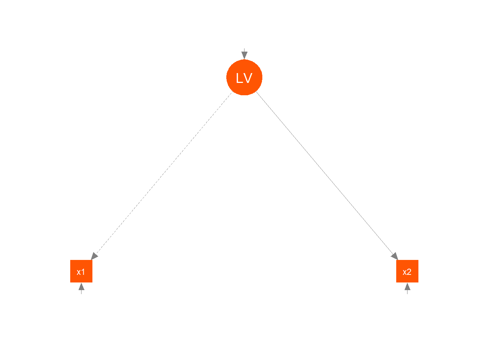
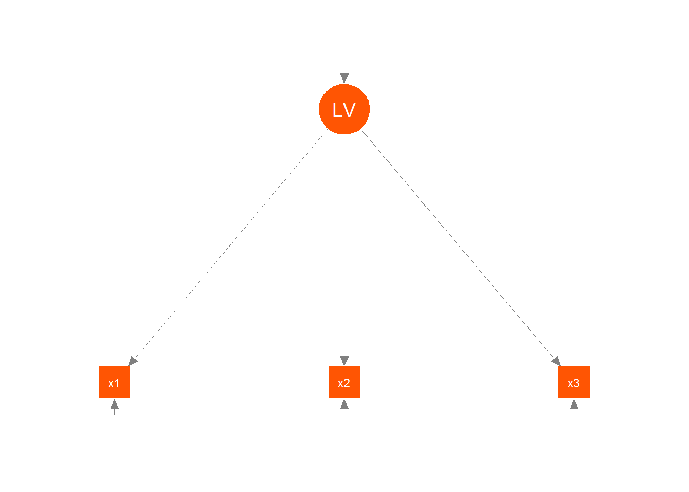

Structural Equation Modeling
Structural equation modeling combines the path analytic and latent variable techniques together to allow for regression models among latent and observed variables. Any model, even the SLiM, can be seen as some form of SEM. However, the term is typically reserved for the combination of latent and observed variables in a model.
Measurement model
The measurement model refers to the latent variable models, i.e. factor analysis, and typical practice in SEM is to investigate these separately and first. The reason is that one wants to make sure that the measurement model holds before going any further with the underlying constructs. For example, for one’s sample of data one might detect two latent variables work better for a set of indicators, or might find that some indicators are performing poorly.
Structural model
The structural model specifies the relations among latent and observed variables that do not serve as indicators. It can become quite complex, but at this stage one can lean on what they were exposed to with path analysis, as conceptually we’re in the same place, except now some variables may be latent.
Example
The following model is a classic example from Wheaton et al. (1977), which used longitudinal data to develop a model of the stability of alienation from 1967 to 1971, accounting for socioeconomic status as a covariate. Each of the three factors have two indicator variables, SES in 1966 is measured by education and occupational status in 1966 and alienation in both years is measured by powerlessness and anomia. The structural component of the model hypothesizes that SES in 1966 influences both alienation in 1967 and 1971 and alienation in 1967 influences the same measure in 1971. We also let the disturbances correlate from one time point to the next.
wheaton.model <- '
# measurement model
ses =~ education + sei
alien67 =~ anomia67 + powerless67
alien71 =~ anomia71 + powerless71
# structural model
alien71 ~ aa*alien67 + ses
alien67 ~ sa*ses
# correlated residuals
anomia67 ~~ anomia71
powerless67 ~~ powerless71
# Indirect effect
IndirectEffect := sa*aa
'
The standardized results of the structural model are visualized below, and model results below that. In this case, the structural paths are statistically significant, as is the indirect effect specifically. Higher socioeconomic status is affiliated with less alienation, while there is a notable positive relationship of prior alienation with later alienation. We are also accounting for roughly 50% of the variance in 1971 alienation. Colors represent positive vs. negative weights, and the closer to zero the more faded they are.

lavaan (0.5-22) converged normally after 73 iterations
Number of observations 932
Estimator ML
Minimum Function Test Statistic 4.735
Degrees of freedom 4
P-value (Chi-square) 0.316
Model test baseline model:
Minimum Function Test Statistic 2133.722
Degrees of freedom 15
P-value 0.000
User model versus baseline model:
Comparative Fit Index (CFI) 1.000
Tucker-Lewis Index (TLI) 0.999
Loglikelihood and Information Criteria:
Loglikelihood user model (H0) -15213.274
Loglikelihood unrestricted model (H1) -15210.906
Number of free parameters 17
Akaike (AIC) 30460.548
Bayesian (BIC) 30542.783
Sample-size adjusted Bayesian (BIC) 30488.792
Root Mean Square Error of Approximation:
RMSEA 0.014
90 Percent Confidence Interval 0.000 0.053
P-value RMSEA <= 0.05 0.930
Standardized Root Mean Square Residual:
SRMR 0.007
Parameter Estimates:
Information Expected
Standard Errors Standard
Latent Variables:
Estimate Std.Err z-value P(>|z|)
ses =~
education 1.000
sei 5.219 0.422 12.364 0.000
alien67 =~
anomia67 1.000
powerless67 0.979 0.062 15.895 0.000
alien71 =~
anomia71 1.000
powerless71 0.922 0.059 15.498 0.000
Regressions:
Estimate Std.Err z-value P(>|z|)
alien71 ~
alien67 (aa) 0.607 0.051 11.898 0.000
ses -0.227 0.052 -4.334 0.000
alien67 ~
ses (sa) -0.575 0.056 -10.195 0.000
Covariances:
Estimate Std.Err z-value P(>|z|)
.anomia67 ~~
.anomia71 1.623 0.314 5.176 0.000
.powerless67 ~~
.powerless71 0.339 0.261 1.298 0.194
Variances:
Estimate Std.Err z-value P(>|z|)
.education 2.801 0.507 5.525 0.000
.sei 264.597 18.126 14.597 0.000
.anomia67 4.731 0.453 10.441 0.000
.powerless67 2.563 0.403 6.359 0.000
.anomia71 4.399 0.515 8.542 0.000
.powerless71 3.070 0.434 7.070 0.000
ses 6.798 0.649 10.475 0.000
.alien67 4.841 0.467 10.359 0.000
.alien71 4.083 0.404 10.104 0.000
R-Square:
Estimate
education 0.708
sei 0.412
anomia67 0.600
powerless67 0.726
anomia71 0.649
powerless71 0.692
alien67 0.317
alien71 0.497
Defined Parameters:
Estimate Std.Err z-value P(>|z|)
IndirectEffect -0.349 0.041 -8.538 0.000To be clear, your interpretations based on standard regression still hold here, as the edge parameters are still regression coefficients just like they have always been. It will serve you well in the beginning to interpret each endogenous variable individually as its own model, then move toward the big picture. Regression with latent variables is the same as regression with observed variables which is the same as a mixture of them. Correlations, i.e. undirected paths, are still just correlations just like anywhere else. As for the model fit indices, I will discuss them momentarily and in turn.
Issues in SEM
Identification
Identification generally refers to the problem of finding a unique estimate of the value for each parameter in the model. Consider the following: \[ a + b = 2\]
There is no way for us to determine a unique solution for \(a\) and \(b\), e.g. the values of 1 and 1 work just as well as -1052 and 1054 and infinite other combinations. We can talk about 3 basic scenarios, and the problem generally regards how much information we have (in terms of (co)variances) vs. how many parameters we want to estimate in the model.
- A model which has an equal number of observations (again, in terms of (co)variances) and parameters to estimate would have zero degrees of freedom, and is known as a just identified model. In a just identified model there are no extra degrees of freedom leftover to test model fit.
- Underidentified models are models where it is not possible to find a unique estimate for each parameter. These models may have negative degrees of freedom or problematic model structures, as in the example above, and you’ll generally know right away there is a problem as whatever software package will note an error, warning, or not provide output.
- Overidentified models have positive degrees of freedom, meaning there is more than enough pieces of information to estimate each parameter. It is desirable to have overidentified models as it allows us to use other measures of model fit.
Consider the following CFA example in which we try to estimate a latent variable model with only two observed variables, as would be the case in the prior Alienation measurement models if they are examined in isolation. We have only two variances and one covariance to estimate two paths, the latent variable variance and the two residual variances. By convention, a path is always fixed at 1 to scale the latent variable, but that still leaves us with four parameters to estimate with only three pieces of information, hence the -1 degrees of freedom and other issues in the output.
modelUnder = 'LV =~ x1 + x2'
modelJust = 'LV =~ x1 + x2 + x3'
underModel = cfa(modelUnder, data=cbind(x1,x2,x3))
summary(underModel)lavaan (0.5-22) converged normally after 10 iterations
Number of observations 100
Estimator ML
Minimum Function Test Statistic NA
Degrees of freedom -1
Minimum Function Value 0.0000000000000
Parameter Estimates:
Information Expected
Standard Errors Standard
Latent Variables:
Estimate Std.Err z-value P(>|z|)
LV =~
x1 1.000
x2 0.679 NA
Variances:
Estimate Std.Err z-value P(>|z|)
.x1 0.404 NA
.x2 0.740 NA
LV 0.614 NA Now if we had a third manifest variable, we now have six pieces of information to estimate and still seven unknowns. Again though, we usually fix the first loading to 1, so it would be estimated. An alternative approach would be to fix the factor variance to some value (typically 1 to create a standardized latent variable). This will allow us to estimate a unique value for each path.
Even so, this is the just identified situation, and so the model runs, but we won’t have any fit measures because we can perfectly reproduce the observed correlation matrix.
justModel = cfa(modelJust, data=cbind(x1,x2,x3))
summary(justModel, fit=T)lavaan (0.5-22) converged normally after 21 iterations
Number of observations 100
Estimator ML
Minimum Function Test Statistic 0.000
Degrees of freedom 0
Minimum Function Value 0.0000000000000
Model test baseline model:
Minimum Function Test Statistic 90.969
Degrees of freedom 3
P-value 0.000
User model versus baseline model:
Comparative Fit Index (CFI) 1.000
Tucker-Lewis Index (TLI) 1.000
Loglikelihood and Information Criteria:
Loglikelihood user model (H0) -389.071
Loglikelihood unrestricted model (H1) -389.071
Number of free parameters 6
Akaike (AIC) 790.143
Bayesian (BIC) 805.774
Sample-size adjusted Bayesian (BIC) 786.824
Root Mean Square Error of Approximation:
RMSEA 0.000
90 Percent Confidence Interval 0.000 0.000
P-value RMSEA <= 0.05 NA
Standardized Root Mean Square Residual:
SRMR 0.000
Parameter Estimates:
Information Expected
Standard Errors Standard
Latent Variables:
Estimate Std.Err z-value P(>|z|)
LV =~
x1 1.000
x2 1.417 0.281 5.033 0.000
x3 1.773 0.383 4.629 0.000
Variances:
Estimate Std.Err z-value P(>|z|)
.x1 0.724 0.113 6.424 0.000
.x2 0.432 0.113 3.840 0.000
.x3 0.220 0.151 1.457 0.145
LV 0.294 0.112 2.636 0.008Note that in the full alienation model, we have 6*7/2 = 21 variances and covariances, which provides enough to estimate the parameters of the model.
Determining identification is difficult for any complex model. Necessary conditions include there being model degrees of freedom \(\geq 0\), and scaling all latent variables, but they are not sufficient. In general though, it is enough to know conceptually what the issue is and how the information you have relates to what you can estimate.
Fit
There are many, many measures of model fit for SEM, and none of them will give you a definitive answer as to how your model is doing. Your assessment, if you use them, is to take a holistic approach to get a global sense of how your model is doing. Let’s look again at the alienation results.
fitMeasures(alienation, c('chisq', 'df', 'pvalue', 'cfi', 'rmsea', 'srmr', 'AIC')) chisq df pvalue cfi rmsea srmr aic
4.735 4.000 0.316 1.000 0.014 0.007 30460.548 Chi-square test
Conceptually the \(\chi^2\) test measures the discrepancy between the observed correlations and those implied by the model. In the graphical model section, we actually gave an example of reproducing a correlation from a path analysis. In general, the model goal is to reproduce them as closely as we can. It compares the fitted model with a (saturated) model that does not have any degrees of freedom. The degrees of freedom for this test are equal to the data (variances + covariances) minus the number of parameters estimated. A non-significant \(\chi^2\) suggests our predictions are not statistically different from those we observe, so yay!
Estimator ML
Minimum Function Test Statistic 4.735
Degrees of freedom 4
P-value (Chi-square) 0.316Or not. Those familiar with null-hypothesis testing know that one cannot accept a null hypothesis, and attempting to do so is fundamentally illogical. Other things that affect this measure specifically include multivariate non-normality, the size of the correlations (larger ones are typically related to larger predicted vs. observed discrepancies), unreliable measures (can actually make this test fail to reject), and sample size (same as with any other model scenario and statistical significance).
So if it worries you that a core measure of model fit in SEM is fundamentally problematic, good. As has been said before, no single measure will be good enough on its own, so gather as much info as you can. Some suggest to pay more attention to the \(\chi^2\) result, but to me, the flawed logic is something that can’t really be overcome. If you use it with appropriate null hypothesis testing logic, a significant \(\chi^2\) test can tell you that something is potentially wrong with the model.
- Note that lavaan also provides a Chi-square test which compares the current model to a model in which all paths are zero, and is essentially akin to the likelihood ratio test we might use in standard model settings (e.g. comparing against an intercept only model). For that test, we want a statistically significant result. However, one can specify a prior model conducted with lavaan to test against specifically (i.e. to compare nested models).
CFI etc.
The comparative fit index compares the fitted model to a null model that assumes there is no relationship among the measured items. CFI values larger than .9 or especially .95 are desired. Others include the Tucker-Lewis Fit Index, which is provided in standard lavaan output, but there are more incremental fit indices where those come from.
User model versus baseline model:
Comparative Fit Index (CFI) 1.000
Tucker-Lewis Index (TLI) 0.999RMSEA
The root mean squared error of approximation is a measure that also centers on the model-implied vs. sample covariance matrix, and, all else being equal, is lower for simpler models and larger sample sizes. Look for values less than .05. Lavaan also provides a one-sided test that the RMSE is \(\leq .05\), which ideally would be high, but the confidence interval is enough for reporting purposes.
Root Mean Square Error of Approximation:
RMSEA 0.014
90 Percent Confidence Interval 0.000 0.053
P-value RMSEA <= 0.05 0.930
Standardized Root Mean Square Residual:
SRMR 0.007SRMR
The standardized root mean squared residual is the mean absolute correlation residual, i.e. the difference between the observed and model-implied correlations. Historical suggestions are to also look for values less than .05, but it is better to simply inspect the residuals and note where there are large discrepancies.
residuals(alienation, type='cor')$cor eductn sei anom67 pwrl67 anom71 pwrl71
education 0.000
sei 0.000 0.000
anomia67 0.007 -0.020 0.000
powerless67 -0.006 0.018 0.000 0.000
anomia71 0.007 -0.017 0.000 0.001 0.000
powerless71 -0.001 0.001 -0.001 0.000 0.000 0.000Like many matrices, it doesn’t take much to where it can be difficult to discern patterns unless one takes a visual approach. Perhaps consider d3heatmap (examples throughout this document) or corrplot packages.
Fit Summarized
A brief summary of these and other old/typical measures of fit are described here. However they all have issues, and one should never use cutoffs as a basis for your ultimate thinking about model performance. Studies have been done and all the fit indices can potentially have problems in various scenarios, and the cutoffs commonly used by applied researchers do not hold up under scrutiny. While they can provide some assistance in the process, they are not meant to overcome a global assessment of theory-result compatibility.
Model Comparison
All of the above, while rooted in model comparison approaches, are by themselves only providing information about the fit or lack thereof regarding the current model. In any modeling situation, SEM or otherwise, a model comparison approach is to be preferred. Even when we don’t have the greatest model, being able to choose among viable options can help science progress.
AIC
AIC is a good way to compare models in SEM just as it is elsewhere, where a penalty is imposed on the likelihood based on the number of parameters estimated, i.e. model complexity. The value by itself is not useful, but the ‘better’ model will have a lower value. A natural question arises as to how low is low enough to prefer one model over another, but this is impossible to answer because the value of AIC varies greatly with the data and model in question. However, this frees you to know which is ‘better’, at least in terms of AIC, while still allowing you to consider the relative merits of the models being considered. However, if the lower AIC is associated with the simpler model, you’d be hard-pressed to justify not taking it.
BIC
One can probably ignore the BIC in this context. This isn’t actually Bayesian, and if you were using a Bayesian approach, WAIC or DIC would be appropriate. If you aren’t using a Bayesian approach, then AIC would likely be preferable in most circumstances. The BIC has a different penalty than AIC, and is not a measure based on predictive performance, which is what we typically want in model selection.
Example
Let’s compare the previous model to one without the indirect effect and in which the SES and Alienation contributions are independent (i.e. just make the previous code change to alien67 ~ 0*ses). We’ll use the semTools package for easy side by side comparison.
library(semTools)
## compareFit(alienation, alienationNoInd)################### Nested Model Comparison #########################
chi df p delta.cfi
alienation - alienationNoInd 200.28 1 <.001 0.0941| chisq | df | pvalue | cfi | tli | aic | bic | rmsea | srmr | |
|---|---|---|---|---|---|---|---|---|---|
| alienation | 4.735 | 4 | .316 | .000 | .999 | 30460.548 | 30542.783 | .014 | .007 |
| alienationNoInd | 205.017 | 5 | .000 | .906 | .717 | 30658.830 | 30736.227 | .207 | .173 |
The first result is a likelihood ratio test. The model with no path is nested within the model with a path and so this is a viable option. It tells us essentially that adding the indirect path results in a statistically significantly better model. In terms of fit indices, the model including the indirect effect appears to fit the data well (note that the .000 is actually 1.00), while the other model does not. So now we can say that not only does our model appear to fit the data well, but is better than a plausible competitor.
Prediction
While the fitted correlation matrix is nice to be able to obtain, it has always struck me a bit odd that one can’t even predict the actual data with typical SEM software. Part of this is due to the fact that the models regard the covariance matrix as opposed to the raw data, and that is the focus in many SEM situations. But in path analysis, measurement models, and SEM where mean structures are of focus (e.g. growth curves), it stands to reason that one would like to get predicted values and/or be able to test a model on new data. Even in more complex models, predictions can be made by fixing parameters at estimated values and supplying new data.
Lavaan at least does do this for you, and its lavPredict function allows one to get predicted values for both latent and observed variables, for the current or new data. In addition, the semTools package is a great resource for comparing models generally, comparing models across groups, model simulation and so forth.
Observed covariates
While I would hope it is by now, just to be clear, SEM doesn’t only have to be about structural relations among latent variables. At any point observed covariates can be introduced to the structural model as well, and this is common practice. As an example, the alienation model is fundamentally wrong (from a causal perspective if that’s of particular interest), as it doesn’t include many background or other characteristics we’d commonly collect on individuals and which might influence feelings of alienation.
Interactions
Interactions among both observed and latent variables can be included in SEM, and have the same interpretation as they would in any regression model. As noted previously, a common term for this in SEM terminology is moderation. While many depictions in SEM suggest that one variable moderates another, just like with standard interactions it is arbitrary whether one says A interacts with/moderates B or vice versa, and this fact doesn’t change just because we are conducting an SEM. For latent variables, one can think of adding a latent variable whose indicator variables consists of product terms of the indicators for the latent variables we want to have an interaction. See indProd and probe2WayMC in the semTools package.
Estimation
In everything demonstrated thus far, we have been using standard maximum likelihood to estimate the parameters. This often may not be the best choice. The following list comes from the MPlus manual, and most of these are available in lavaan.
- ML: maximum likelihood parameter estimates with conventional standard errors and chi-square test statistic
- MLM: maximum likelihood parameter estimates with standard errors and a mean-adjusted chi-square test statistic that are robust to non-normality. The chi-square test statistic is also referred to as the Satorra-Bentler chi-square.
- MLMV: maximum likelihood parameter estimates with standard errors and a mean- and variance-adjusted chi-square test statistic that are robust to non-normality
- MLR: maximum likelihood parameter estimates with standard errors and a chi-square test statistic (when applicable) that are robust to non-normality and non-independence of observations when used with TYPE=COMPLEX. The MLR standard errors are computed using a sandwich estimator. The MLR chi-square test statistic is asymptotically equivalent to the Yuan-Bentler T2* test statistic.
- MLF: maximum likelihood parameter estimates with standard errors approximated by first-order derivatives and a conventional chi-square test statistic
- MUML: Muthén’s limited information parameter estimates, standard errors, and chi-square test statistic
- WLS: weighted least square parameter estimates with conventional standard errors and chi-square test statistic that use a full weight matrix. The WLS chi-square test statistic is also referred to as ADF when all outcome variables are continuous.
- WLSM: weighted least square parameter estimates using a diagonal weight matrix with standard errors and mean-adjusted chi-square test statistic that use a full weight matrix
- WLSMV: weighted least square parameter estimates using a diagonal weight matrix with standard errors and mean- and variance-adjusted chi-square test statistic that use a full weight matrix
- ULS: unweighted least squares parameter estimates
- ULSMV: unweighted least squares parameter estimates with standard errors and a mean- and variance-adjusted chi-square test statistic that use a full weight matrix
- GLS: generalized least square parameter estimates with conventional standard errors and chi-square test statistic that use a normal-theory based weight matrix
- Bayes: Bayesian posterior parameter estimates with credibility intervals and posterior predictive checking23
Missing data
A lot of data of interest in applications of SEM have missing values. Two common approaches to dealing with this are Full Information Maximum Likelihood (FIML) and Multiple Imputation (MI), and both are generally available in SEM packages. This is far too detailed an issue to treat adequately here, though we can take a moment to describe the approach generally. FIML uses the available information in the data (think pairwise correlations). MI uses a process to estimate the raw data values, and to adequately account for the uncertainty in those guesses, it creates multiple versions of complete data sets, each with different estimates of the missing values. The SEM model is run on all of them and estimates combined across all models (e.g. the mean path parameter). The imputation models, i.e. those used to estimate the missing values, can be any sort of regression model, including using variables not in the SEM model.
In addition, Bayesian approaches can estimate the missing values as additional parameters in the model (in fact, MI is essentially steeped within a Bayesian perspective). Also there may additional concerns when data is missing over time, i.e. longitudinal dropout. Using the lavaan package is nice because it comes with FIML, and the semTools package adds MI.
Other SEM approaches
SEM is very flexible and applicable to a wide variety of modeling situations. Some of these will be covered in their own module (e.g. mixture models, growth curve modeling).
How to fool yourself with SEM
Kline’s third edition text listed over 50(!) ways in which one could fool themselves with SEM, which speaks to the difficulty in running SEM and dealing with all of its issues. I will note a handful of some of them to keep in mind in particular.
Sample size
If you don’t have at least a thousand observations, you will probably only be able to conduct (possibly unrealistically) simple SEM models, or just the measurement models for scale development, or only structural models with observed variables (path analysis). Even with simpler modeling situations, one should have several hundred observations. In the simple alienation model above, we already are dealing with 17 parameters to estimate, and it doesn’t include any background covariates of the individuals, which is unrealistic. Furthermore, because it’s a mediation model, adding such variables might require additional direct and indirect paths, time-varying covariates that would have effects at both years, etc., and the number of parameters could balloon quite quickly.
One will see many articles of published research with low sample sizes using SEM. This doesn’t make it correct to do so, and one should be highly suspicious of the results suggested in those papers, as they are overfit or not including relevant information.
Poor data
If the correlations among the data are low, one isn’t going to magically have strong effects by using SEM. I have seen many clients running these models and who are surprised that they don’t turn out well, when a quick glance at the correlation matrix would have suggested that there wasn’t much to work with in the first place.
Naming a latent variable doesn’t mean it exists
While everything may turn out well for one’s measurement model, and the results in keeping with theory, this doesn’t make it so. This is especially the case with less reliable measures. Latent constructs require operational definitions and other considerations in order to be useful, and rule out that one isn’t simply measuring something else, or that it makes sense that such a construct has real (physical ties).
As an example, many diagnoses in the Diagnostic and Statistical Manual of Mental Disorders have not even been shown to exist via a statistical approach like SEM24, while others are simply assumed to exist, and even presumably (subsequently) supported by measurement models (often with low N), only to be shown to have no ties to any underlying physiology.
Ignoring diagnostics
Ignoring residuals, warning messages, etc. is a sure path to trying to interpret nonsensical results. Look at your residuals, fitted values etc. If your SEM software of choice is giving you messages, find out what they mean, because it may be very important.
Ignoring performance
As in our previous path analysis example, one can write a paper on a good fitting model with statistically significant results, and not explain the targets of interest very well on a practical level. Check things like R-square (and accuracy if binary targets) when running your models.
Summary
SEM is a powerful modeling approach that generalizes many other techniques, but it simply cannot be used lightly. Strong theory, strong data, and a lot of data can potentially result in quite interesting models that have a lot to say about the underlying constructs of interest. Go into it with competing ideas, and realize that your theory is wrong from the outset, even if there is evidence that it isn’t way off.
R packages used
- lavaan
- semTools
- semPlots